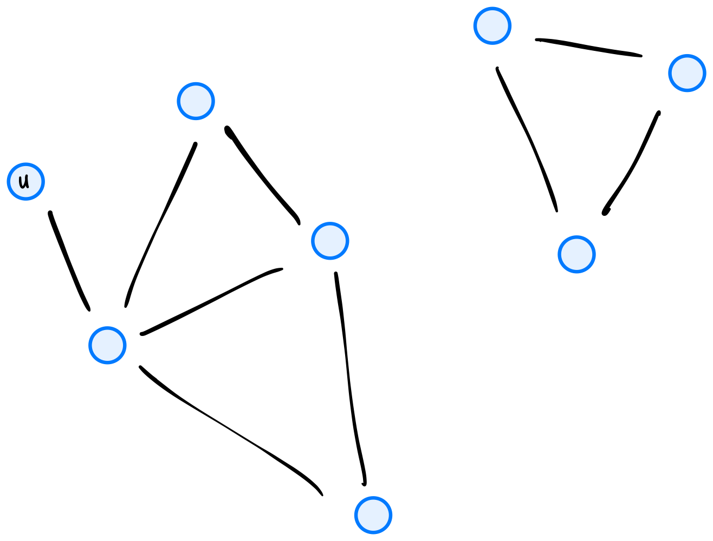

Problems tagged with "depth first search"
Problem #262
Tags: depth first search, lecture-13, trees
What is the time complexity of depth first search (DFS) when run on a tree with \(n\) nodes?
Solution
\(\Theta(n)\). DFS takes \(\Theta(V + E)\) time, and a tree with \(n\) nodes has \(n - 1\) edges, so it takes \(\Theta(n + (n - 1)) = \Theta(n)\) time.
Problem #263
Tags: aggregate analysis, depth first search, lecture-13
Suppose an undirected graph \(G = (V, E)\) is a tree with 33 edges. Suppose a node \(s\) is used as the source of a depth-first search.
Including the root call of dfs on node \(s\), how many calls to dfs will be made?
Solution
34. A tree with 33 edges has \(33 + 1 = 34\) nodes, and it's connected, so every node is reachable from \(s\). DFS calls dfs exactly once on each reachable node, so it makes 34 calls.
Problem #264
Tags: breadth first search, depth first search, lecture-13
Let \(G = (V, E)\) be an undirected tree.
Suppose breadth-first search (BFS) and depth-first search (DFS) are each run on the graph using the same source node. True or False: for any node \(u\) in the graph, the BFS predecessor of \(u\) and the DFS predecessor of \(u\) must be the same.
Solution
True.
In a tree there is exactly one simple path from the source to \(u\). BFS and DFS both find a path from the source to \(u\), and it has to be this one, so both predecessors are the node right before \(u\) on it.
Problem #266
Tags: breadth first search, connected components, depth first search, lecture-13
We saw in lecture that both full BFS and DFS produce trees when run on connected graphs, and forests when run on disconnected graphs. Suppose a full BFS and a full DFS are run on an undirected graph with three connected components. True or False: the number of trees in the BFS forest will equal the number of trees in the DFS forest.
Solution
True. Both full BFS and full DFS start a new search once for each connected component (each search discovers exactly the nodes in the source's component), so each produces one tree per connected component: three trees in both forests.
Problem #271
Tags: depth first search, lecture-13
Suppose a depth first search (DFS) is run on the graph shown below using node \(u_4\) as the source and the convention that graph.neighbors produces nodes in ascending order by label. What will be the predecessor of \(u_6\) in the DFS?

Solution
\(u_5\). DFS starts at \(u_4\), looks at the neighbors, and sees \(u_2\) is undiscovered, so it makes a recursive call dfs(u_2). At \(u_2\), it sees that \(u_1\) is undiscovered, and calls dfs(u_1). At \(u_1\), there's nothing to do, so it's marked as visited and the recursion unrolls back to the call on dfs(u_2). We then look at the next neighbor of \(u_2\), which is \(u_3\). We make a call to dfs(u_3), which looks at its neighbors and sees \(u_5\). We make a call to dfs(u_5), and during this call we discover \(u_6\), meaning that \(u_5\) is the DFS predecessor of \(u_6\).
Problem #272
Tags: depth first search, lecture-13, start and finish times
Suppose a depth first search is run on the graph shown below using node \(u_4\) as the source, and adopt the convention that graph.neighbors produces nodes in ascending order of label. Which node will have the smallest finish time?

Solution
\(u_1\). DFS from \(u_4\) first visits \(u_2\), its smaller neighbor, and \(u_2\) first visits \(u_1\). The only neighbor of \(u_1\) is \(u_2\), which is pending, so \(u_1\) finishes right away (at time 4), before any other node.
Problem #273
Tags: depth first search, lecture-13, start and finish times
Suppose a depth first search is run on the graph shown below using node \(u_4\) as the source, and adopt the convention that graph.neighbors produces nodes in ascending order of label. Use the convention that the start time of the source is 1. What will be the start time of node \(u_7\)?

Solution
12, since the search starts \(u_4\) (1), \(u_2\) (2), \(u_1\) (3, finishing at 4), \(u_3\) (5), \(u_5\) (6), \(u_6\) (7, finishing at 8), \(u_8\) (9, finishing at 10) and \(u_9\) (11), always taking the smallest undiscovered neighbor. Then \(u_9\) visits its only undiscovered neighbor, \(u_7\), which starts at time 12.
Problem #274
Tags: depth first search, lecture-13
Suppose a depth first search is run on the graph below using node \(d\) as the source, and using the convention that a node's neighbors are produced in alphabetical order.

What is the predecessor of node \(v\) in the DFS search tree?
Solution
\(r\). From \(d\), DFS first visits \(f\), then (from \(f\)) \(g\), then (from \(g\)) \(r\), and then (from \(r\)) \(v\). So \(v\) is discovered from \(r\).
Problem #275
Tags: depth first search, lecture-13, start and finish times
Suppose a depth first search is run on the graph below in order to find start and finish times using node \(d\) as the source.

Adopt the convention that the first start time is 1, and, as always, that neighbors are produced in ascending order by label. What will be the start and finish times of node \(r\)?
Solution
Start time 4, finish time 7. DFS starts \(d\) at 1, \(f\) at 2, \(g\) at 3, and \(r\) at 4. From \(r\) it starts \(v\) at 5, which finishes at 6, and then \(r\) finishes at 7.
Problem #276
Tags: depth first search, lecture-13
Suppose a DFS is run on the graph shown below using node 11 as the source.

What will be the DFS predecessor of node 3 in the search? Use the convention that a node's neighbors are produced in ascending order by label.
Solution
1. Starting at 11, DFS visits 8 (the smaller neighbor), then 5, then 2, then 1, taking the smallest undiscovered neighbor each time. Node 1's neighbors are 2, which is pending, and 3, which is still undiscovered, so dfs is called on 3 from 1.
Problem #277
Tags: depth first search, lecture-13, start and finish times
Suppose a DFS is run on the graph shown below using node 11 as the source. Use the convention that a node's neighbors are produced in ascending order by label.

Part 1)
What will be the start time of node 2? Use the convention that the start time of the source is 1.
Solution
4. DFS starts 11 at time 1, then visits its smaller neighbor 8 (time 2), then 8's smallest undiscovered neighbor 5 (time 3), and then 5's smallest neighbor 2 (time 4).
Part 2)
What will be the finish time of node 10?
Solution
11. Continuing the search: 2 visits 1 (time 5), 1 visits 3 (6), 3 visits 4 (7), and 4 visits 9 (8). Node 9's neighbors (4, 5 and 11) are all pending, so 9 finishes at 9. Then 4 visits 10 (10), whose only neighbor is 4, so 10 finishes at 11.
Problem #278
Tags: depth first search, lecture-13
Suppose a depth first search (DFS) is run on the graph below, starting at node \(a\). Start and finish times are calculated using the convention that the start time of node \(a\) is 1.

What will be the finish time of node \(c\)? Assume the convention that a node's neighbors are produced in alphabetical order.
Solution
11. DFS from \(a\) visits \(b\) first (time 2), then \(b\)'s descendants \(f\), \(g\) and \(e\), and \(b\) finishes at time 9. Next \(a\) visits \(c\), which starts at time 10. Both of \(c\)'s neighbors, \(b\) and \(e\), are already visited, so \(c\) finishes right away, at time 11.
Problem #279
Tags: depth first search, lecture-13
Suppose a depth first search (DFS) is run on the graph below, starting at node \(a\). Start and finish times are calculated using the convention that the start time of node \(a\) is 1.

What will be the finish time of node \(e\)? Assume the convention that a node's neighbors are produced in alphabetical order.
Solution
13. Taking the first undiscovered neighbor in alphabetical order each time, DFS starts \(a\) (1), \(b\) (2), \(d\) (3), \(e\) (4), \(f\) (5) and \(c\) (6). Then \(c\) finishes (7), \(f\) visits \(h\) (8), \(h\) finishes (9), and \(f\) finishes (10). Back at \(e\), the only undiscovered neighbor left is \(g\) (start 11, finish 12), so \(e\) finishes at 13.
Problem #280
Tags: depth first search, lecture-13, start and finish times
Suppose a depth-first search (DFS) is run on the graph shown below using node \(s\) as the source and adopting the convention that a node's neighbors are produced in ascending order of their label.

Part 1)
What will be the start time of node \(u_7\)?
Solution
8. Taking the smallest undiscovered neighbor each time, the search starts \(s\) (1), \(u_1\) (2), \(u_2\) (3), \(u_3\) (4), \(u_4\) (5), \(u_5\) (6) and \(u_6\) (7). Then \(u_6\)'s smallest undiscovered neighbor is \(u_7\), which starts at time 8.
Part 2)
What will be the finish time of node \(u_7\)?
Solution
9. The neighbors of \(u_7\), \(u_5\) and \(u_6\), are both pending, so \(u_7\) finishes right after it starts, at time 9.
Part 3)
Which node will be the DFS predecessor of node \(u_7\)?
Solution
\(u_6\). As in the first part, \(u_5\) visits \(u_6\) before it gets to \(u_7\), and \(u_6\) then visits \(u_7\), so dfs is called on \(u_7\) from \(u_6\).
Problem #281
Tags: depth first search, lecture-13
A modification of the dfs function from lecture is shown below. It is the same as the original dfs function, except that it has an added print statement.
def dfs(graph, u, status=None):
"""Start a DFS at `u`."""
# initialize status if it was not passed
if status is None:
status = {node: 'undiscovered' for node in graph.nodes}
status[u] = 'pending'
for v in graph.neighbors(u):
if status[v] == 'undiscovered':
print("Hello!")
dfs(graph, v, status)
status[u] = 'visited'Consider running this algorithm on the following graph, starting at node \(a\):
How many times will "Hello!" be printed? Note that this is not a full DFS, and that not all nodes are reachable from \(a\).
Solution
6. The print runs once for each recursive call, that is, once for every node discovered other than \(a\). Following the edges' directions, the nodes reachable from \(a\) are \(a, b, c, d, e, f, g\). Each of the six besides \(a\) is discovered once, so "Hello!" is printed 6 times.
Problem #282 🌶️
Tags: depth first search, lecture-13
A modification of the dfs function from lecture is shown below. It is the same as the original dfs function, except that it has an added print statement.
def dfs(graph, u, status=None):
"""Start a DFS at `u`."""
# initialize status if it was not passed
if status is None:
status = {node: 'undiscovered' for node in graph.nodes}
status[u] = 'pending'
for v in graph.neighbors(u):
print("Hello!")
if status[v] == 'undiscovered':
dfs(graph, v, status)
status[u] = 'visited'Consider running this algorithm on the following graph, starting at node \(a\):
How many times will "Hello!" be printed? Note that this is not a full DFS, and that not all nodes are reachable from \(a\).
Solution
10.
The print statement is inside the loop over \(u\)'s neighbors, but before the check of \(v\)'s status. So it runs once for every neighbor of every node that dfs is called on, whether or not that neighbor has been discovered. Since dfs is called exactly once on each node reachable from \(a\), the number of prints is the sum of the out-degrees of the nodes reachable from \(a\).
Following the edges' directions, \(a\) reaches \(b\), \(c\), \(d\), \(e\), \(f\) and \(g\), but not \(h\), since all of \(h\)'s edges point away from it. Adding up the out-degrees:
Notice that \((e, g)\) and \((g, e)\) both count, since they are two different edges, and that \(h\)'s three edges don't count, since \(h\) is never visited.
Problem #283 🌶️
Tags: aggregate analysis, depth first search, lecture-13
Consider the code shown below. It shows DFS as seen in lecture, with one modification: a print statement in the for-loop.
def dfs(graph, u, status=None):
"""Start a DFS at `u`."""
# initialize status if it was not passed
if status is None:
status = {node: 'undiscovered' for node in graph.nodes}
status[u] = 'pending'
for v in graph.neighbors(u):
print("Hello!")
if status[v] == 'undiscovered':
dfs(graph, v, status)
status[u] = 'visited'How many times will "Hello!" be printed if dfs is run on the graph below using node \(u\) as the source? Note that dfs will not be restarted if the first call does not explore the whole graph.

Solution
12. The print runs once for every neighbor of every node visited. The DFS visits only \(u\)'s connected component, which has 5 nodes and 6 edges. In an undirected graph each edge appears in two adjacency lists, so the total is \(2 \times 6 = 12\).
Problem #284
Tags: depth first search, lecture-13
Suppose we define a forward-looking graph with \(n\) nodes to be the directed graph \(G = (V, E)\) with nodes \(u_1, \ldots, u_n\) and the edge \((u_i, u_j)\) if and only if \(i < j\). An example of such a graph with 4 nodes is shown below.

What is the time complexity of depth-first search when run on a forward-looking graph with \(n\) nodes, using node \(u_1\) as the source? State your answer as a function of \(n\) using asymptotic notation.
Solution
\(\Theta(n^2)\). DFS takes \(\Theta(V + E)\) time, and every node is reachable from \(u_1\). There is an edge for each pair \(i < j\), so \(E = n(n-1)/2\), and the time is \(\Theta(n + n^2) = \Theta(n^2)\).
Problem #285
Tags: depth first search, lecture-13, start and finish times
Suppose you run DFS on a graph in which all nodes are reachable from the source node. True or false: the source node will be marked as visited last, only if the graph is undirected.
Solution
False. The source is marked as visited last in both directed and undirected graphs. Every other node is reachable from the source, so each is discovered and finished during the recursive calls made by the call on the source, which finishes only after all of them have.
Problem #286
Tags: depth first search, lecture-13
Suppose a DFS is run on a directed graph. Let \(u\) and \(v\) be two nodes in the graph, and assume that the edge \((u, v)\) exists. True or False: it is possible that, at some moment in time, \(u\) is marked as “visited” while \(v\) is marked as “undiscovered”.
Solution
False.
Before dfs(u) marks \(u\) as visited, it loops over all of \(u\)'s successors and calls dfs on any that are undiscovered. So by the time \(u\) is visited, \(v\) has been discovered (it is pending or visited).
Problem #287 🌶️
Tags: depth first search, lecture-13
Suppose a depth first search is run on a directed graph. True or False: it is possible that, at some moment in time, there is a node marked as visited which has a neighbor (successor) that is marked as pending.
Solution
True.
Take the graph with edges \((a, b)\) and \((b, a)\) and start the DFS at \(a\). While \(a\) is pending, dfs(b) is called. It sees that \(a\) is already pending and then finishes, so \(b\) is visited while its successor \(a\) is still pending.
Problem #288 🌶️
Tags: depth first search, lecture-13
Suppose that a depth first search is being performed on an undirected graph, and when dfs is called on a node \(u\), the statuses of all of its neighbors are printed. True or False: it is possible that one of the neighbors is marked as “visited”.
Solution
False.
dfs(u) is only called when \(u\) is undiscovered. If a neighbor \(w\) were already visited, then dfs(w) would have looped over its neighbors, including \(u\), before finishing, so \(u\) would already have been discovered.
Problem #289
Tags: depth first search, lecture-13, start and finish times
Suppose a depth first search (DFS) is run on a connected undirected graph, and there is a node \(u\) which has only one neighbor. True or False: the finish time of node \(u\) will be equal to its start time plus 3.
Solution
False. If \(u\) is not the source, its only neighbor is the node it was discovered from, which is already pending. So DFS finds nothing new to visit from \(u\), and \(u\)'s finish time is its start time plus 1. (If \(u\) is the source, its finish time is its start time plus \(2(|V| - 1) + 1\), which equals its start time plus 3 only when the graph has exactly two nodes.)
Problem #290
Tags: depth first search, lecture-13, start and finish times
In a DFS on an undirected graph \(G\), the start time of node \(u\) is 12, while the finish time of node \(u\) is 37. How many nodes were marked pending between the moment that node \(u\) was marked pending and the moment that it was marked visited? Node \(u\) itself should be excluded from your count.
Solution
12. Every node that is marked pending during this time is also marked visited during it, and each one uses two time steps: one for its start and one for its finish. The times strictly between 12 and 37 are \(13, \ldots, 36\), which is 24 time steps, so \(24 / 2 = 12\) nodes.
Problem #291
Tags: depth first search, lecture-13, start and finish times
Suppose \(T = (V, E)\) is a connected, undirected graph with no cycles (that is, \(T\) is a tree). Suppose a depth first search is run on \(T\) using node \(s\) as the source. Assume that node \(s\) has two neighbors: \(u\) and \(v\). If \(|V| = 15\), which one of the below represents possible start and finish times of \(u\) and \(v\)? You may assume that graph.neighbors produces neighbors in ascending order of label.
Solution
start[u] = 2, finish[u] = 21, start[v] = 22, finish[v] = 29
Problem #292
Tags: depth first search, lecture-13, start and finish times
Suppose an undirected graph has 50 nodes. A full DFS is run on the graph to compute start and finish times. Suppose that, for each node, the difference between the node's start and finish is printed, and the largest difference is found to be 15.
True or False: it is possible that the graph is connected.
Solution
False.
If the graph were connected, the first call to dfs would reach all 50 nodes, so the other 49 nodes would all start and finish between the source's start and finish times. The source's finish minus start would then be at least \(2 \cdot 49 + 1 = 99\), which is much more than 15.
Problem #293
Tags: depth first search, lecture-13, start and finish times
Let \(G\) be a graph, and suppose \(s\), \(u\), and \(v\) are three nodes in the graph.
Suppose a depth-first search (DFS) is run on \(G\) using node \(s\) as the source and adopting the convention that a node's neighbors are produced in ascending order by label. During this DFS, start and finish times are computed. Suppose it is found that:
Now suppose another DFS is run using node \(s\) as the source, but adopting a different convention about the order in which neighbors are produced. Suppose new_start and new_finish are the start and finish times found by this second DFS. True or False: it must be that
Solution
False.
Take the triangle with edges \((s, u)\), \((s, v)\), \((u, v)\). If \(s\)'s neighbors are produced with \(u\) first, then \(v\) is discovered from \(u\) and its interval is nested inside \(u\)'s. If \(v\) comes first, \(u\) is discovered from \(v\) and the nesting is reversed.
Problem #294 🌶️
Tags: depth first search, lecture-13, start and finish times
Let \(G\) be an undirected graph, and let \(u\) and \(v\) be two nodes in the graph, with \(v\) reachable from \(u\).
Suppose that at the moment dfs(u) is called, \(v\) is still undiscovered. True or False: the eventual start time of \(v\) must be less than the finish time of \(u\).
Solution
False.
The only path from \(u\) to \(v\) might go through a node that is already pending. For example, take edges \((s, u)\) and \((s, v)\) and start at \(s\). If dfs(u) is called first, \(u\) has no undiscovered neighbors and finishes right away, and \(v\) is only started afterward from \(s\).
Problem #295
Tags: depth first search, lecture-13, start and finish times
Suppose \(v\) is reachable from node \(u\) in a directed graph. A DFS is run on the graph, and node \(u\) is discovered before node \(v\) (its start time is less than \(v\)'s start time). True or false: the finish time of node \(v\) must be less than the finish time of node \(u\).
Solution
False. Consider the graph with nodes \(s\), \(u\), and \(v\), and edges \((s,u)\), \((u,s)\), and \((s,v)\), where a DFS is run with node \(s\) as source, going to node \(u\) first. Then \(u\) will be finished before \(v\) is started (and thus before it is finished, too).
Problem #296 🌶️
Tags: depth first search, lecture-13
Suppose \(G\) is a connected, undirected graph with a unique longest simple path; call this path \(p\). A depth first search is run on \(G\) from some source node \(s\).
True or False: the longest simple path in the DFS tree must be \(p\).
Solution
False.
Take edges \((s, a)\), \((s, b)\), \((s, c)\), \((a, b)\), \((a, d)\). The unique longest simple path is \(c, s, b, a, d\) (4 edges). If the DFS from \(s\) visits \(a\) first, then \(b\) and \(d\) are both discovered from \(a\), the edge \((s, b)\) is not in the DFS tree, and the longest path in the tree has only 3 edges.
No 🌶️ problems in this topic.